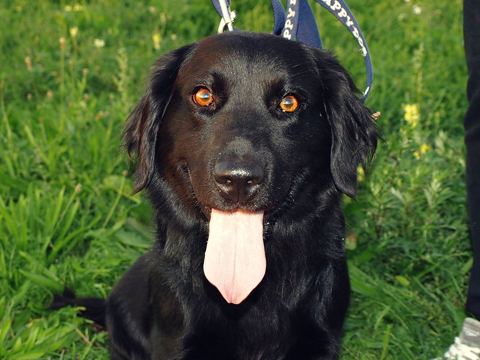

Nejakí ľudia ma našli za dedinou a nahlásili babám z paciek. Tie sa na mňa prišli pozrieť a prvé čo povedali bolo: "Ďalší...ďalší vyhodený, ach jaj."
Odvtedy som ich Kevin. :)
Mám asi 4 roky a momentálne som v KS, ale radšej by som bol už niekde s mojou budúcou rodinkou. Vždy som smutný, keď ma naspäť zatvárajú do voliéry. :/ Rád behám, rád chodím na prechádzky a samozrejme najradšej sa nechávam škrabkať. So psíkmi vychádzam podľa sympatií, s mačičkami nevedno, no ale sliepky, to ja vôbec nemusím... možno iba v miske, haha. ;) Rád by som teda bol na dvore (bez sliepok) s prístupom dnu u nejakej milujúcej rodinky, ktorá sa do mňa zaľúbi zakaždým, keď pozrú do mojich krásnych očí. :)
Ak ma chcete, napíšte. Budete však musieť podpísať adopčnú zmluvu a zaplatiť adopčný poplatok (kastrácia, očkovanie a čipovanie).
✉ Viac info správa.
☞ Sledovať nás môžete na instagrame: @karantenna_stanica_topolcany
$ Prispieť na zvieratká môžete na č.účtu:
